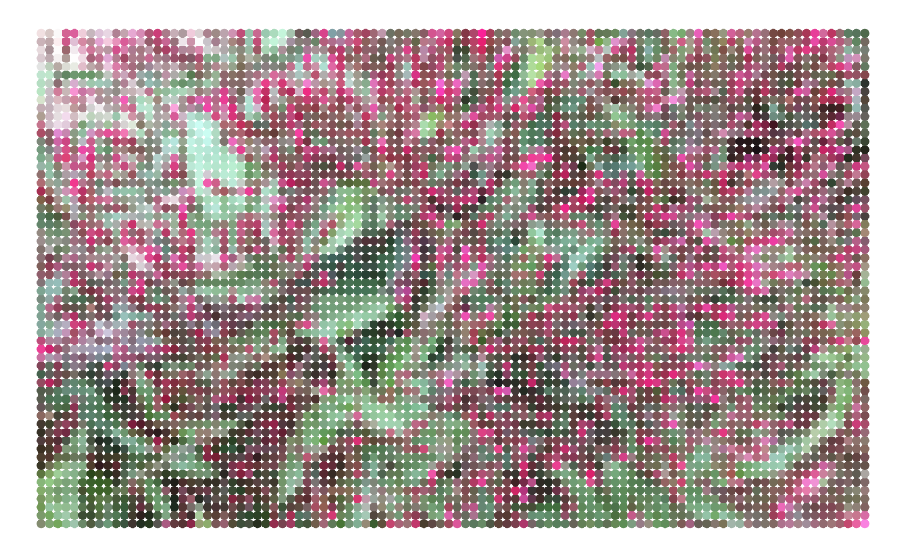
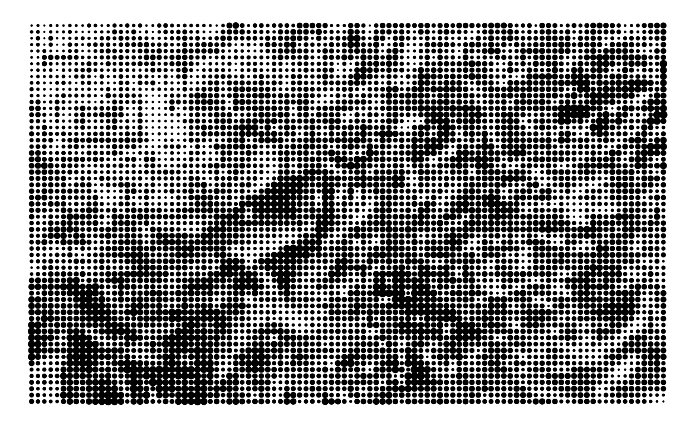
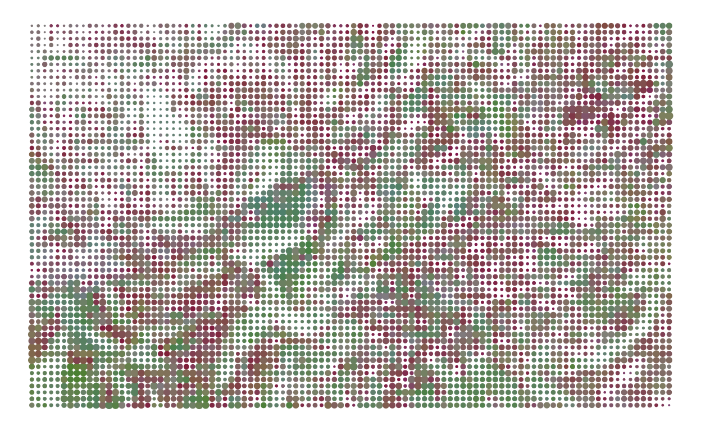
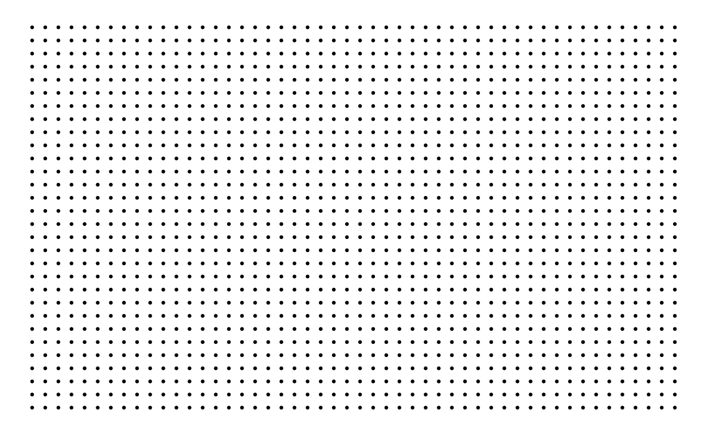
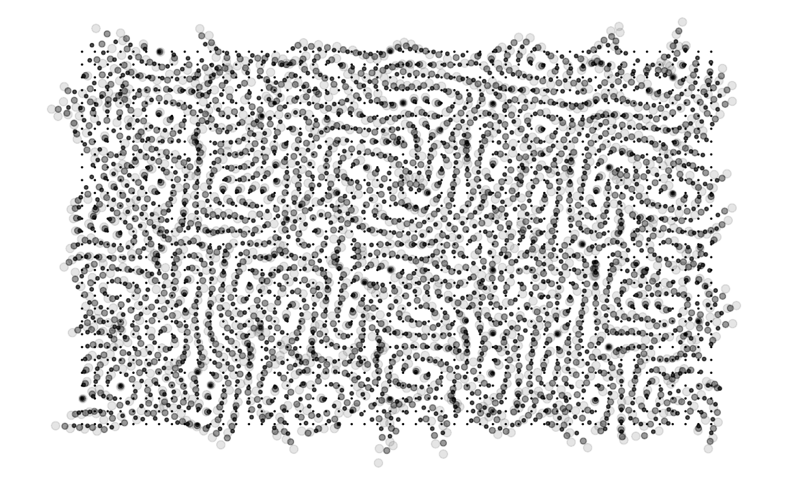
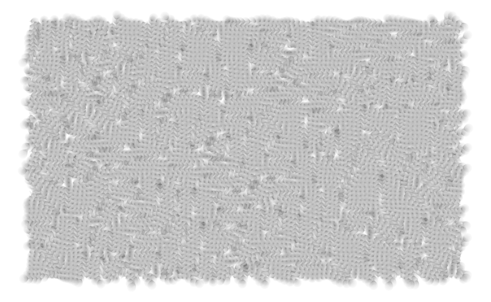
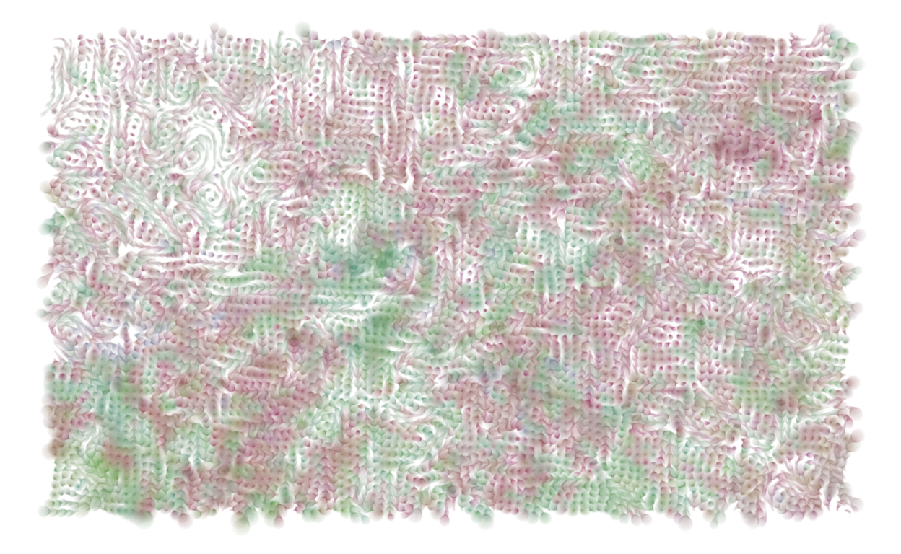
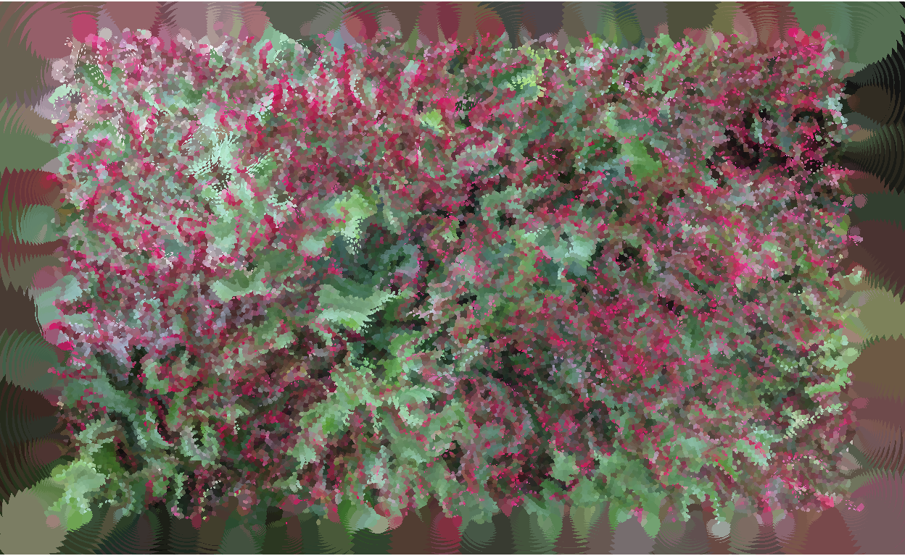
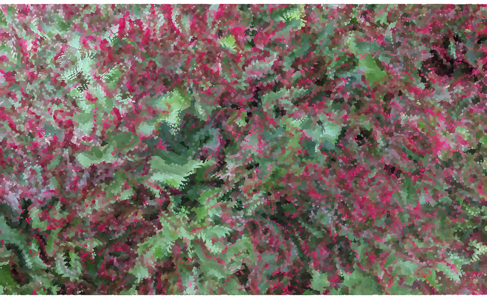

Prelude
In recent weeks I’ve been posting generative art from the Water Colours series on twitter. The series has been popular, prompting requests that I sell prints, mint NFTs, or write a tutorial showing how they are made. For personal reasons I didn’t want to commercialise this series. Instead, I chose to make the pieces freely available under a CC0 public domain licence and asked people to donate to a gofundme I set up for a charitable organisation I care about (the Lou’s Place women’s refuge here in Sydney). I’m not going to discuss the personal story behind this series, but it does matter. As I’ve mentioned previously, the art I make is inherently tied to moods. It is emotional in nature. In hindsight it is easy enough to describe how the system is implemented but this perspective is misleading. Although a clean and unemotional description of the code is useful for explanatory purposes, the actual process of creating the system is deeply tied to my life, my history, and my subjective experience. Those details are inextricably bound to the system. A friend described it better than I ever could:
The computer doesn’t make this art any more than a camera makes a photograph; art is always intimate (Amy Patterson)
In this post I’ll describe the mechanistic processes involved in creating these pieces, but this is woefully inadequate as a description of the artistic process as a whole. The optical mechanics of a camera do not circumscribe the work of a skilled photographer. So it goes with generative art. The code describes the mechanics; it does not describe the art. There is a deeply personal story underneath these pieces (one that I won’t tell here), and I would no more mint an NFT from that story than I would sell a piece of my soul to a collector.
The water colours repository
Why use version control here?
When I started making generative art I didn’t think much about archiving my art or keeping it organised. I liked making pretty things, and that was as far as my thought process went. I didn’t place the code under version control, and I stored everything in my Dropbox folder. There’s nothing wrong with that: some things don’t belong on GitHub. During the development phase of any art project that’s still what I do, and I’m perfectly happy with it.
Things become a little trickier when you want to share the art. My art website is hosted on GitHub pages, and so my initial approach was to keep the art in the website repository. Huuuuge mistake. Sometimes the image files can be quite large and sometimes a series contains a large number of images. By the time I’d reached 40+ series, Hugo took a very long time to build the site (several minutes), and GitHub took even longer to deploy it (over half an hour).
Eventually I decided it made more sense to have one repository per series. Each one uses the “series-” prefix to remind me it’s an art repo. I don’t use these repositories during development: they exist solely to snapshot the release. For example, the series-water-colours repository isn’t going to be updated regularly, it’s really just an archive combined with a “docs” folder that is used to host a minimal GitHub Pages site that makes the images public. It’s convenient for my purposes because my art website doesn’t have to host any of the images: all it does is hotlink to the images that are exposed via the series repo.
It may seem surprising that I’ve used GitHub for this. Image files aren’t exactly well suited to version control, but it’s not like they’re going to be updated. Plus, there are a lot of advantages. I can explicitly include licencing information in the repository, I can release source code (when I want to), and I can include a readme file for anyone who wants to use it.
The manifest file
One nice feature of doing things this way is that it has encouraged me to include a manifest file, a plain csv file with one row per image, and one column for each piece of metadata I want to retain about the images. Again, it seems like overkill, but I’m starting to realise that if I don’t have a system I’ll forget things like “what the piece is called” or “when I made it”.
I can use readr::read_csv() to download the manifest and do a little data wrangling to organise it into a format that is handy to me right now:
manifest
# A tibble: 20 × 9
series sys_id img_id short_name format long_name date
<chr> <chr> <chr> <chr> <chr> <chr> <date>
1 watercolour sys02 img34 teacup-oce… jpg Ocean in a… 2021-07-31
2 watercolour sys02 img31 incursions jpg Incursions 2021-08-14
3 watercolour sys02 img32 percolate jpg Percolate 2021-08-21
4 watercolour sys02 img37 gentle-des… jpg Gentle Des… 2021-08-21
5 watercolour sys02 img41 stormy-seas jpg Stormy Seas 2021-08-22
6 watercolour sys02 img42 turmeric jpg Turmeric A… 2021-08-24
7 watercolour sys02 img43 torn-and-f… jpg Torn and F… 2021-08-24
8 watercolour sys02 img47 inferno jpg Seventh Ci… 2021-08-27
9 watercolour sys02 img48 storm-cell jpg Storm Cell… 2021-08-27
10 watercolour sys02 img49 tonal-earth jpg Tonal Earth 2021-08-29
11 watercolour sys02 img50 cold-front jpg Cold Front 2021-08-29
12 watercolour sys02 img51 kintsugi-d… jpg Kintsugi D… 2021-08-29
13 watercolour sys02 img53 departure jpg Departure 2021-08-29
14 watercolour sys02 img54 echo jpg Echo 2021-08-30
15 watercolour sys02 img57 portal jpg Portal 2021-08-31
16 watercolour sys02 img60 salt-stone… jpg Gods of Sa… 2021-08-31
17 watercolour sys02 img61 amanecer-d… jpg El Último … 2021-09-01
18 watercolour sys02 img65 plume jpg Plume 2021-09-02
19 watercolour sys02 img67 woodland-s… jpg Woodland S… 2021-09-02
20 watercolour sys02 img68 below-the-… jpg Below the … 2021-09-03
# … with 2 more variables: path_2000 <chr>, path_500 <chr>Previewing the artwork
More to the point, the manifest data frame is nicely suited for use with the bs4cards package, so I can display some of the pieces in a neat and tidy thumbnail grid. Here are the first eight pieces from the series, arranged by date of creation:
manifest[1:8, ] %>%
bs4cards::cards(
image = path_500,
link = path_2000,
title = long_name,
spacing = 3,
width = 2
)


Each thumbnail image links to a medium resolution (2000 x 2000 pixels) jpg version of the corresponding piece, if you’d like to see the images in a little more detail.
Dependencies
In the remainder of this post I’ll walk you through the process of creating pieces “in the style of” the water colours series. If you really want to, you can take a look at the actual source, but it may not be very helpful: the code is little opaque, poorly structured, and delegates a lot of the work to the halftoner and jasmines packages, neither of which is on CRAN. To make it a little easier on you, I’ll build a new system in this post that adopts the same core ideas.
In this post I’ll assume you’re already familiar with data wrangling and visualisation with tidyverse tools. This is the subset of tidyverse packages that I have attached, and the code that follows relies on all these in some fashion:
In addition to tidyverse and base R functions, I’ll use a few other packages as well. The magick, raster, rprojroot, fs, and ambient packages are all used in making the art. Because functions from those packages may not be as familiar to everyone, I’ll namespace the calls to them in the same way I did with bs4cards::cards() previously. Hopefully that will make it easier to see which functions belong to one of those packages.
Art from image processing
Finding the image file
As in life, the place to start is knowing where you are.
This post is part of my blog, and I’ll need to make use of an image file called "jasmine.jpg" stored alongside my R markdown. First, I can use rprojroot::find_root() to find out where my blog is stored on my laptop. I’ll do that by searching for a "_site.yml" file:
blog <- rprojroot::find_root("_site.yml")
blog
[1] "/home/danielle/GitHub/sites/distill-blog"I suspect that most people reading this would be more familiar with the here package that provides a simplified interface to rprojroot and will automatically detect the .Rproj or .here file associated with your project. Because here::here() is so convenient, in most situations you don’t need rprojroot, but there are exceptions. For example some of my projects are comprised of partially independent sub-projects that each need their own root folder. It’s not usually a good idea to have RStudio projects nestled inside one another, so I’ve found rprojroot handy when I need to distinguish between different kinds of root (e.g., project root or sub-project root).
The next step in orientation is finding the post folder. Because this is a distill blog, all my posts are stored in the _posts folder, and I’ve adopted a consistent naming convention for my post folders. Every one begins with the post date in year-month-day format, followed by a human-readable “slug”:
post <- paste(params$date, params$slug, sep = "_")
post
[1] "2021-09-07_water-colours"This allows me to construct the path to the image file and display it in the post:
file <- fs::path(blog, "_posts", post, "jasmine.jpg")
knitr::include_graphics(file)

Importing the image
Now that we have the path to the image file, the next step is to import it into R at a suitable resolution. The original image size is 1000x600 pixels, which is a little more than we need. Here’s a simple import_image() function that will read it into R at the desired width and height:
import_image <- function(path, width, height) {
geometry <- paste0(width, "x", height)
path %>%
magick::image_read() %>%
magick::image_scale(geometry)
}
Internally, all the work is being done by the fabulous magick package that provides bindings to the ImageMagick library. In fact, it’s the ImageMagick library that is doing all the work here. The data structure that is loaded into R is merely a pointer to an object that ImageMagick is manipulating. Generally that’s a good thing for performance reasons, but in this case we’re going to work with the raw image data inside R.
Converting the image to data
Converting the image into a data structure we can use is a two step process. First, we create a matrix that represents the image in a format similar to the image itself, which is the job of the construct_matrix() function below. It takes the image as input, and first coerces it to a raster object and then to a regular matrix: in the code below, the matrix is named mat, and the pixel on the i-th row and j-th column of the image is represented by the contents of mat[i, j].
A little care is needed when interpreting the rows of this matrix. When we think about graphs, the values on y-axis increase as we move our eyes upwards from the bottom, so our mental model has the small numbers at the bottom and the big numbers at the top. But that’s not the only mental model in play here. When we read a matrix or a table we don’t look at it, we read it - and we read from top to bottom. A numbered list, for example, has the smallest numbers at the top, and the numbers get bigger as we read down the list. Both of those mental models are sensible, but it’s hard to switch between them.
The tricky part here is that the raw image is written in “reading format”. It’s supposed to be read like a table or a list, so the indices increase as we read down the image. The image data returned by construct_matrix() is organised this format. However, when we draw pictures with ggplot2 later on, we’re going to need to reverse this convention and switch to “graph format” with the small numbers at the bottom. That’s the reason why the code above flips the order of the row names: our next task will be to convert this (reading-formatted) matrix into a tidy tibble, and those row and column names will become become our (graph-formatted) x- and y-coordinates.
The code that does this transformation is shown below in the construct_tibble() function:
construct_tibble <- function(mat) {
# convert to tibble
tbl <- mat %>%
as.data.frame() %>%
rownames_to_column("y") %>%
as_tibble()
# reshape
tbl <- tbl %>%
pivot_longer(
cols = starts_with("x"),
names_to = "x",
values_to = "shade"
)
# tidy
tbl <- tbl %>%
arrange(x, y) %>%
mutate(
x = x %>% str_remove_all("x") %>% as.numeric(),
y = y %>% str_remove_all("y") %>% as.numeric(),
id = row_number()
)
return(tbl)
}
The first line coerces the matrix to a plain data frame, then uses rownames_to_columns() to extract the row names before coercing it to a tibble. This step is necessary because tibbles don’t have row names, and we need to have a variable y to store those co-ordinate values. The next step uses pivot_longer() to capture all the other variables (currently named x1, x2, etc) and pull them down into a single column that specifies the x co-ordinate.
So at this stage, the tbl tibble contains three variables: an x value, a y value, and a shade that contains the hex code for a colour. The last step is to tidy up the values. After pivot_longer() does its job, the x variable contains strings like "x1", "x2", etc, but we’d prefer them to be actual numbers like 1, 2, etc. The same is true for the y variable. To fix this, the last part of the code does a tiny bit of string manipulation using str_remove_all() to get rid of the unwanted prefixes, and then coerces the result to a number.
Taken together, the import_image(), construct_matrix(), and construct_tibble() functions provide us with everything we need to pull the data from the image file and organise it into a format that ggplot2 is expecting:
jas <- file %>%
import_image(width = 100, height = 60) %>%
construct_matrix() %>%
construct_tibble()
jas
# A tibble: 6,000 × 4
y x shade id
<dbl> <dbl> <chr> <int>
1 1 1 #838c70ff 1
2 10 1 #3c3123ff 2
3 11 1 #503d3dff 3
4 12 1 #363126ff 4
5 13 1 #443a30ff 5
6 14 1 #8a6860ff 6
7 15 1 #665859ff 7
8 16 1 #5a5d51ff 8
9 17 1 #535c4cff 9
10 18 1 #944b61ff 10
# … with 5,990 more rowsA little unusually, the hex codes here are specified in RGBA format: the first two numbers specify the hexadecimal code for the red level, the second two represent the green level (or “channel”), the third two are the blue channel, and the last two are the opacity level (the alpha channel). I’m going to ignore the alpha channel for this exercise though.
There’s one last thing to point out before turning to the fun art part. Notice that jas also contains an id column. It’s generally good practice to have an id column that uniquely identifies each row, and will turn out to be useful later when we need to join this data set with other data sets that we’ll generate.
Art from data visualisation
Let the art begin!
The first step is to define a helper function ggplot_themed() that provides a template that we’ll reuse in every plot. Mostly this involves preventing ggplot2 from doing things it wants to do. When we’re doing data visualisation it’s great that ggplot2 automatically provides things like “legends”, “axes”, and “scales” to map from data to visual aesthetics, but they’re not much use to us artistically, so we might as well have a function that gets rid of all those things:
ggplot_themed <- function(data) {
data %>%
ggplot(aes(x, y)) +
coord_equal() +
scale_size_identity() +
scale_colour_identity() +
scale_fill_identity() +
theme_void()
}
This template will make all our later code easier: the x and y aesthetics are already specified, ggplot2 won’t try to “interpret” our colours and sizes for us, and it won’t mess with the aspect ratio. In effect, this turns off the autopilot: we’re flying this thing manually…
There are a lot of ways to plot the jas data. The least imaginative possibility is geom_tile(), which produces a pixellated version of the jasmines photo where each cell is filled with the same colour as the corresponding pixel:
Of course, if you are like me you always forget to use the fill aesthetic. The muscle memory tells me to use the colour aesthetic, so I often end up drawing something where only the borders of the tiles are coloured:
It’s surprisingly pretty, and (yet another) demonstration of how good the visual system is at reconstructing images from low-quality input: the original image is still perceptible despite the fact that most of the plot area is black. I didn’t end up pursuing this (yet!) but I think there’s a lot of artistic potential here. It might be worth playing with at a later date. In that sense generative art is a lot like any other kind of art (or, for that matter, science). It is as much about exploration and discovery as it is about technical prowess.
The path I did follow is based on geom_point(). Each pixel in the original image is plotted as a circular marker in the appropriate colour. Here’s the simplest version of this idea applied to the jas data:
jas %>%
ggplot_themed() +
geom_point(aes(colour = shade))

It’s simple, but I like it.
Extracting the colour channels
Up to this point we haven’t been manipulating the colours in any of the plots: the hex code in the shade variable is left intact. There’s no inherent reason we should limit ourselves in such a boring way. Base R provides the col2rgb() function that separates the hex code into red, green, blue channels, and represents each with integers between 0 and 255. It also provides the rgb2hsv() function that converts this RGB representation into hue, saturation, and value format.
The code below defines an extract_channels() helper function that takes the shade column in the data, and adds six new columns that I’ve unimaginatively named red, grn, blu, hue, sat, and val (I’m a sucker for variable names that are all the same length):
After applying this to the jas data, we have several new variables that we can play with and recombine in different ways to create new art:
jas <- extract_channels(jas)
jas
# A tibble: 6,000 × 10
y x shade id red grn blu hue sat val
<dbl> <dbl> <chr> <int> <int> <int> <int> <dbl> <dbl> <dbl>
1 1 1 #838c70ff 1 131 140 112 0.220 0.200 0.549
2 10 1 #3c3123ff 2 60 49 35 0.0933 0.417 0.235
3 11 1 #503d3dff 3 80 61 61 0 0.237 0.314
4 12 1 #363126ff 4 54 49 38 0.115 0.296 0.212
5 13 1 #443a30ff 5 68 58 48 0.0833 0.294 0.267
6 14 1 #8a6860ff 6 138 104 96 0.0317 0.304 0.541
7 15 1 #665859ff 7 102 88 89 0.988 0.137 0.4
8 16 1 #5a5d51ff 8 90 93 81 0.208 0.129 0.365
9 17 1 #535c4cff 9 83 92 76 0.260 0.174 0.361
10 18 1 #944b61ff 10 148 75 97 0.950 0.493 0.580
# … with 5,990 more rowsArt from channel manipulation
One way to use this representation is in halftone images. If you have a printer that contains only black ink, you can approximate shades of grey by using the size of each dot to represent how dark that pixel should be:
map_size <- function(x) {
ambient::normalise(1-x, to = c(0, 2))
}
jas %>%
ggplot_themed() +
geom_point(
mapping = aes(size = map_size(val)),
colour = "black",
show.legend = FALSE
)

For real world printers, this approach is very convenient because it allows us to construct any shade we like using only a few different colours of ink. In the halftone world shades of grey are merely blacks of different size, pinks are merely sizes of red (sort of), and so on.
But we’re not using real printers. There’s nothing stopping us retaining the original hue and saturation, while using dot size to represent intensity. That allows us to produce “halftonesque” images:
jas %>%
ggplot_themed() +
geom_point(
mapping = aes(
colour = hsv(hue, sat, .5),
size = map_size(val)
),
show.legend = FALSE
)

In this code, the hsv() function takes the hue and saturation channels from the original image, but combines them with a constant intensity value: the output is a new colour specified as a hex code that ggplot2 can display in the output. Because we have stripped out the value channel, we can reuse the halftone trick. Much like a halftone image, the image above uses the size aesthetic to represent the intensity at the corresponding pixel.
Intermission
Up to this point I’ve talked about image manipulation, and I hope you can see the artistic potential created when we pair image processing tools like magick with data visualisation tools like ggplot2. What I haven’t talked about is how to choose (or generate!) the images to manipulate, and I haven’t talked about how we might introduce a probabilistic component to the process. I’m not going to say much about how to choose images. The possibilities are endless. I’ve used a photo I took in my garden in this post, but the pieces in Water Colours series have a different origin. I dripped some food colouring into a glass of water and took some photos of the dye diffusing. Small sections were cropped out of these photos and often preprocessed in some fashion by changing the hue, saturation etc. These manipulated photos were then passed into a noise generation process, and the output produced images like this:


Art from noise generators
Multidimensional noise generation
How can we generate interesting noise patterns in R? As usual, there are many different ways you can do this, but my favourite method is to use the ambient package that provides bindings to the FastNoise C++ library. A proper description of what you can do with ambient is beyond what I can accomplish here. There are a lot of things you can do with a tool like this, and I’ve explored only a small subset of the possibilities in my art. Instead, what I’ll do is link to a lovely essay on flow fields and encourage you to play around yourself.
The field() function below provides one example. At its heart is ambient::gen_simplex(), a function that generates simplex noise (examples here), a useful form of multidimensional noise that has applications in computer graphics. In the code below, the simplex noise is then modified by a billow fractal that makes it “lumpier”. That’s the job of ambient::gen_billow() and ambient::fracture(). This is then modified one last time by the ambient::curl_noise() function to avoid some undesirable properties of the flow fields created by simplex noise.
In any case, here is the code. You’ll probably need to read through the ambient documentation to understand all the moving parts here, but for our purposes the main things to note are the arguments. The points argument takes a data frame or tibble that contains the x and y coordinates of a set of points. The frequency argument controls the overall “scale” of the noise: does it change quickly or slowly as you move across the image? The octaves argument controls the amount of fractal-ness (hush, I know that’s not a word) to the image. How many times do you apply the underlying transformation?
field <- function(points, frequency = .1, octaves = 1) {
ambient::curl_noise(
generator = ambient::fracture,
fractal = ambient::billow,
noise = ambient::gen_simplex,
x = points$x,
y = points$y,
frequency = frequency,
octaves = octaves,
seed = 1
)
}
The output of the field() function is best interpreted as a set of vectors: it’s not the locations of new points. Rather, it’s telling you how fast the x- and y-components are flowing at each of the locations at the specified points. If we want to shift() a set of points along the directions specified by the field(), we’ll need a function like this:
The set of points is passed to the field(), and then they are moved by a certain amount (a single number specifying a step size) in the relevant direction. The result is a new data frame with the same columns and the same number of rows.
It’s worth noting that the shift() function assumes that points contains an id column as well as the x and y columns. This will be crucial later when we want to merge the output with the jas data. Because the positions of each point are changing, the id column will be the method we use to join the two data sets. It’s also worth noting that shift() keeps track of time for you. The points input contains a time column: the output from shift() increments that by one, indicating we have stepped forward in time as well as moved the points in space.
Art from the noise
To illustrate how this all works, I’ll start by creating a regular 50x30 grid of points:
points_time0 <- expand_grid(x = 1:50, y = 1:30) %>%
mutate(time = 0, id = row_number())
ggplot_themed(points_time0) +
geom_point(size = .5)

Next, I’ll apply the shift() function three times in succession, and bind the results into a single tibble that contains the the data at each point in time:
points_time1 <- shift(points_time0, amount = 1)
points_time2 <- shift(points_time1, amount = 1)
points_time3 <- shift(points_time2, amount = 1)
pts <- bind_rows(
points_time0,
points_time1,
points_time2,
points_time3
)
Then I’ll quickly write a couple of boring wrapper functions that will control how the size and transparency of the markers changes as a function of time…
…and now we can create some art:
pts %>%
ggplot_themed() +
geom_point(
mapping = aes(
size = map_size(time),
alpha = map_alpha(time)
),
show.legend = FALSE
)

Accumulating art with purrr
The code above is inelegant. I’ve “iteratively” created a sequence of data frames by writing the same line of code several times. I could solve this problem by writing a loop, but I’ve become a fan of the functional programming tools in purrr and I’ll take advantage of that. In particular, the purrr::accumulate() function is an underappreciated gem. It does precisely the thing we want to do here. It takes one object (e.g., points) as input, together with a second quantity (e.g., an amount) and uses the user-supplied function (e.g., shift() to produce a new object that can again be passed to that function (i.e., new points). It continues with this process, taking the output of the last iteration of shift() and using it as input to the next iteration until it runs out of amount values. It is very similar to the better-known purrr::reduce() function, except that it doesn’t throw away the intermediate values. The reduce() function is only interested in the destination; accumulate() is a whole journey.
So let’s use it.
The iterate() function below gives a convenient interface…
iterate <- function(pts, time, step, ...) {
bind_rows(accumulate(
.x = rep(step, time),
.f = shift,
.init = pts,
...
))
}
… and here’s the code to recreate the image shown above:
pts <- points_time0 %>%
iterate(time = 3, step = 1)
pts %>%
ggplot_themed() +
geom_point(
mapping = aes(
size = map_size(time),
alpha = map_alpha(time)
),
show.legend = FALSE
)

Assembling the parts
Adding noise to jasmines coordinates
The time has come to start assembling the pieces of the jigsaw puzzle, by applying the flow fields from the previous section to the data associated with the jasmines image. The first step in doing so is to write a small extract_points() function that will take a data frame (like jas) as input, extract the positional information (x and y) and the identifier column (id), and add a time column so that we can modify positions over time:
Here’s how we can use this. The code below extracts the positional information from jas and then use the iterate() function from before to gradually move those positions along the paths traced out by a flow field:
pts <- jas %>%
extract_points() %>%
iterate(time = 20, step = .1)
The pts tibble doesn’t contain any of the colour information from jas, but it does have the “right kind” of positional information. It’s also rather pretty in its own right:
map_size <- function(x) {
ambient::normalise(x^2, to = c(0, 3.5))
}
pts %>%
ggplot_themed() +
geom_point(
mapping = aes(size = map_size(time)),
alpha = .01,
show.legend = FALSE
)

Joining the noise with jasmine colours
We can now take the pixels from the jasmines image and make them “flow” across the image. The next step is to reintroduce the colour information. We can do this using full_join() from the dplyr package. The convenience function join_parts() does this only after removing the x and y coordinates from the jas data: we want the positional information to come from pts, not the original image, so we discard those coordinates and join the two tables by the id column (I promised it would be useful!)
The result is a tibble that looks like this:
jas <- join_parts(jas, pts)
jas
# A tibble: 126,000 × 11
shade id red grn blu hue sat val x y time
<chr> <int> <int> <int> <int> <dbl> <dbl> <dbl> <dbl> <dbl> <dbl>
1 #838c… 1 131 140 112 0.220 0.200 0.549 1 1 0
2 #3c31… 2 60 49 35 0.0933 0.417 0.235 1 10 0
3 #503d… 3 80 61 61 0 0.237 0.314 1 11 0
4 #3631… 4 54 49 38 0.115 0.296 0.212 1 12 0
5 #443a… 5 68 58 48 0.0833 0.294 0.267 1 13 0
6 #8a68… 6 138 104 96 0.0317 0.304 0.541 1 14 0
7 #6658… 7 102 88 89 0.988 0.137 0.4 1 15 0
8 #5a5d… 8 90 93 81 0.208 0.129 0.365 1 16 0
9 #535c… 9 83 92 76 0.260 0.174 0.361 1 17 0
10 #944b… 10 148 75 97 0.950 0.493 0.580 1 18 0
# … with 125,990 more rowsMore importantly though, it produces images like this:
map_size <- function(x, y) {
ambient::normalise((1 - x) * y^2, to = c(0, 5))
}
jas %>%
ggplot_themed() +
geom_point(
mapping = aes(
colour = hsv(hue, sat, .5),
size = map_size(val, time)
),
alpha = .03,
show.legend = FALSE
)

When colouring the image, we’re using the same “halftonesque” trick from earlier. The colours vary only in capture only in hue and saturation. The intensity values are recoded as size, but this time around we’re also using size to capture the “temporal” information. The points get larger as time increases. There are, of course, endless ways in which you could combine the positional, temporal, and shading data to create interesting generative art. This is only one example.
The last chapter
At last we have the tools we need to create images in a style similar (though not identical) to those produced by the Water Colours system. We can import, reorganise, and separate the data:
jas <- file %>%
import_image(width = 200, height = 120) %>%
construct_matrix() %>%
construct_tibble() %>%
extract_channels()
We can define flow fields with different properties, move the pixels through the fields, and rejoin the modified positions with the colour information
pts <- jas %>%
extract_points() %>%
iterate(
time = 40,
step = .2,
octaves = 10,
frequency = .05
)
jas <- join_parts(jas, pts)
jas
# A tibble: 984,000 × 11
shade id red grn blu hue sat val x y time
<chr> <int> <int> <int> <int> <dbl> <dbl> <dbl> <dbl> <dbl> <dbl>
1 #9c8… 1 156 129 120 0.0417 0.231 0.612 1 1 0
2 #81b… 2 129 181 100 0.274 0.448 0.710 1 10 0
3 #8b7… 3 139 120 112 0.0494 0.194 0.545 1 100 0
4 #eed… 4 238 223 219 0.0351 0.0798 0.933 1 101 0
5 #c29… 5 194 154 163 0.962 0.206 0.761 1 102 0
6 #d5e… 6 213 225 195 0.233 0.133 0.882 1 103 0
7 #bde… 7 189 232 190 0.337 0.185 0.910 1 104 0
8 #b3d… 8 179 223 188 0.367 0.197 0.875 1 105 0
9 #b2d… 9 178 220 189 0.377 0.191 0.863 1 106 0
10 #b3d… 10 179 217 191 0.386 0.175 0.851 1 107 0
# … with 983,990 more rowsWe can write customised helpers to guide how information is used:
map_size <- function(x, y) {
12 * (1 - x) * (max(y)^2 - y^2) / y^2
}
And we can render the images with ggplot2:
pic <- jas %>%
ggplot_themed() +
geom_point(
mapping = aes(
colour = shade,
size = map_size(val, time)
),
alpha = 1,
stroke = 0,
show.legend = FALSE
)
pic

The colour bleeding over the edges here is to be expected. Some of the points created with geom_point() are quite large, and they extend some distance beyond the boundaries of the original jasmines photograph. In a way it’s rather aesthetic, like a little frame, but if you prefer to hide this part of the image we can modify the scale limits in ggplot2:
pic +
scale_x_continuous(limits = c(11, 190), expand = c(0, 0)) +
scale_y_continuous(limits = c(7, 114), expand = c(0, 0))

The end result is something that has a qualitative similarity to the Water Colours pieces, but is also possessed of a style that is very much its own. This is as it should be. It may be true that “all art is theft” – as Picasso is often misquoted as saying – but a good artistic theft is no mere replication. It can also be growth, change, and reconstruction.
A happy ending after all.
Epilogue
I find it so amazing when people tell me that electronic music has no soul. You can’t blame the computer. If there’s no soul in the music, it’s because nobody put it there (Björk, via Tim de Sousa)


Last updated
2021-09-09 01:37:22 AEST
Details